Implementation of Deterministic Jitter Characterization on the V93000
Ming Lu, Jose Moreira, Verigy
Paper-ID: 127263 April 2011
1. Introduction
Jitter measurement is a critical part of testing high-speed digital interfaces with automated test equipment (ATE) [1]. In most situations, jitter testing consists of a simple peak-to-peak jitter measurement, or in some cases a measurement of the random and deterministic jitter components on the signal through a jitter decomposition approach [1,2].
In some situations, especially in the characterization phase of a new DUT design, it might be of interest to further decompose the deterministic jitter of the signal being measured into its different components. Figure 1 shows the traditional decomposition of the jitter in a measured signal [3]. One concern with this decomposition approach is that the periodic jitter may be miscatagorized. If the periodic jitter is uncorrelated to the pattern (as is usually the case), and is also bounded and deterministic, then it should be part of the bounded uncorrelated jitter category. Note that in some cases there are approaches where periodic jitter is injected in a synchronous way to the data pattern. This is the case when using an AWG to generate a data pattern with periodic injected jitter [5]. Taking these considerations into account, an enhanced jitter decomposition diagram is shown in Figure 2 [4, 6].
In this paper we will present a technique to measure the data dependent jitter (DDJ) and the bounded uncorrelated jitter (BUJ) using the V93000 digital pin electronics.
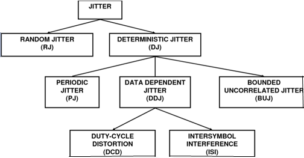
Figure 1 Traditional decomposition of a signal jitter into its different components
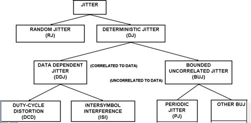
Figure 2 Enhanced jitter decomposition diagram where periodic jitter (PJ) is part of bounded uncorrelated jitter (BUJ)
2. Measuring DDJ
To measure DDJ we will follow the technique described in [1,4] where a jitter histogram is measured for each rising edge of the pattern as shown in Figure 3.
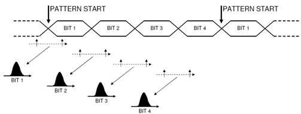
Figure 3 Measuring the jitter histogram for each individual bit in a repetitive pattern
For each measured histogram, one can compute the statistical average value of that bit. The deterministic jitter value for that bit will be the difference between the histogram average value and the ideal bit period transition for that bit. To perform this computation it is necessary to assume that for a single bit's histogram, its average value is at the optimal transition point, and then use that value as the reference to compute the optimal bit periods for the remaining bits.
The histogram mean for each transition is computed using the following approach where the histogram is assumed to be already normalized:
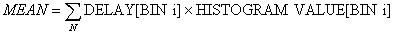
3. Measuring BUJ
To measure the BUJ in a data signal, the strategy is to measure the jitter for only a single transition on the data pattern while ignoring the others as shown in Figure 4. It does not matter which transition is used as long it is the only one being measured. This approach guarantees that only the jitter that is uncorrelated to the data pattern is observed. The drawback is that for very long patterns lengths, the measurement time will also be very long which suggests the need to use small patterns for this type of measurement. Sometimes this longer test time is necessary since measuring a large number of repetitions of the pattern will provide improved accuracy.
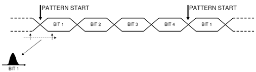
Figure 4 Measuring the jitter histogram of a single bit in the pattern
To obtain the BUJ value, one needs to apply a RJ/DJ jitter separation algorithm to the measured jitter histogram or BER bathtub curve of that transition. One approach, that is easy to perform with an ATE digital channel, is to measure the bathtub curve for that transition and apply the Dual Dirac jitter model to compute the RJ and DJ values as described in [1,2].
It is important to note that BUJ measurements can be very complicated when performed with an oscilloscope. This can be especially true when using a jitter frequency based approach. This is illustrated in Figure 5 which compares the BUJ frequency spectrum from a PRBS7 source, and a PRBS31 source with a 100 MHz low pass filter. In the frequency domain it is still possible to observe the individual deterministic jitter components of the PRBS7 case, but for a PRBS31 it becomes very difficult to separate the PRBS31 BUJ spectrum from a frequency limited random jitter spectrum.
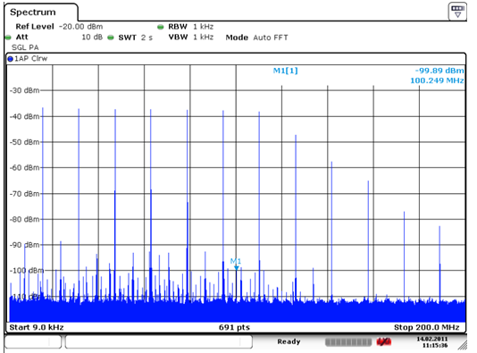
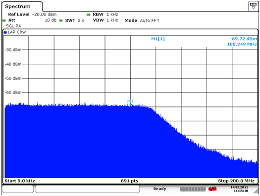
Figure 5 BUJ frequency spectrum from a PRBS7 source (up) and a PRBS31 source (down)
4. Implementation on the V93000
4.1 DDJ Measurement
To implement the DDJ measurement with the V93000 pin electronics it is necessary to measure the jitter histogram for each transition in the pattern. The key point is to find an efficient approach to obtain the error count of each transition edge for a given strobe position for each bit of the pattern. To address this challenge, the following items need to be implemented.
Depending on the application, different patterns are used for characterization (PCIE compliance pattern, K28.5 pattern, PRBS7 pattern, etc.). Each pattern has a different bit sequence and length. For the DDJ measurement, the error count needs to be separated for each transition edge after the pattern execution. This means the pattern must be well defined and the pattern length must be known by the test method for the correct result calculation.
In this paper, we will use the PCIE compliance pattern as an example to verify our approach. The PCIE compliance pattern is recognized as an industry standard and is 40 bits in length. This will make it easier to collect the error count of each transition edge as compared to longer patterns like a PRBS23. Figure 6 shows the PCIE compliance pattern.
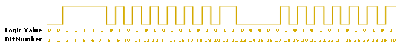
Figure 6 PCIE compliance pattern
For the standard peak-to-peak jitter measurement, we only care about the total error count after the pattern execution. In this case, it is simple to get the exact total error count number by using the ERROR_COUNT_ACQUIRE() API. However, when we perform the DDJ measurement we need to get the individual error counts for each transition edge in the pattern.
To achieve this goal, there are two possible approaches on the V93000. The first approach is to utilize the ERROR_MAP_TEST() API. After each pattern execution, this API will record the pass/fail results of each bit. These results can then be separated based on the pattern, and accumulated as the error count for each transition. This approach is straight forward but requires a larger test time due to the need to download the pass/fail information for every bit in the pattern.
The second approach is to obtain the error count of the entire pattern by performing the needed pattern masking on the fly as needed. While this approach is feasible, and does have clear test time advantages, it is a much more complex to implement. For the objective of this paper, which was to demonstrate that it is possible to measure BUJ with the V93000 and not to try to obtain the smaller test time, we decided to use the first approach which is easier to implement.
After obtaining the error count for each transition edge, the DSP_JITTER_HISTOGRAM() API is used to compute the histogram mean value. We finally calculate the maximum deviation of histogram mean values among transition edges to obtain the DDJ value. Figure 7 shows a block diagram of the DDJ measurement algorithm as implemented on the V93000.
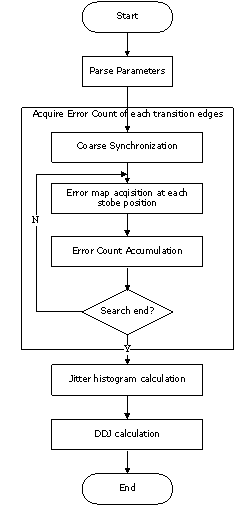
Figure 7 DDJ measurement flow on V93000
4.2 BUJ Measurement
The BUJ measurement with V93000 pin electronics is easier to implement with regards to the error count measurement, but more complicated in the jitter calculation when compare to the DDJ measurement.
As mentioned in section 3, for BUJ we only care about the error count distribution of a single transition edge inside the pattern. In this case we can use the ERROR_COUNT_ACQUIRE() API instead of ERROR_MAP_TEST() API to collect the error count of the chosen transition edge in a well-defined pattern. In such a pattern, there is only one bit being compared, and in order to achieve the required statistical accuracy, the pattern will be repeated many times. After the pattern execution, the total error count of the pattern will be equal to the error count of the chosen bit for the BUJ measurement. Although it is irrelevant which bit in the pattern is chosen for the measurement, a RJ/DJ separation step is required, and it makes sense to select a bit that contains two transition edges for example, 010 where 1 is the chosen bit) to enable the generation of a BER bathtub curve.
Figure 8 shows an example of the pattern setup for the BUJ measurement (PCIE compliance pattern). In this example, bit number 17 (with two transition edges) is set as the comparing bit. In this example we are utilizing X8 mode which assigns eight bits per vector for each PS3600 channel. This is then muxed with MUX4 mode on the HX card, so each vector line will contain 32 bits. Since PCIE compliance pattern contains 40 bits, it will require five vector lines to create a coherent pattern execution block of 160 bits. In this block we will be comparing four bits which correspond to bit position 17. If we want to get a BER up to 1E-9 level, the pattern length should be 40E9 bits (40E9 / 40 = 1E9 compared bits). As the example shows, the block of pattern is looped 25E6 times which results in a 40E9 bit pattern length (25E6 * 50 vectors* 32 bits = 40G bits).
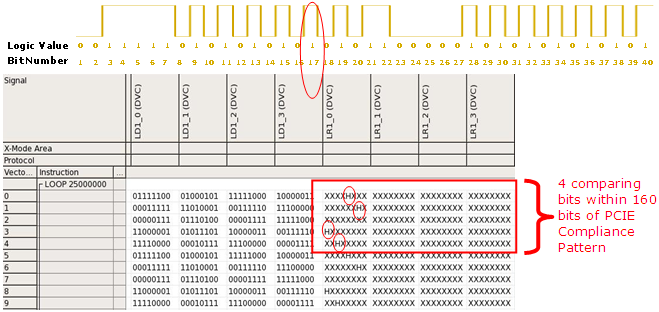
Figure 8 BUJ measurement pattern, logic waveform (top) and vector setup (bottom)
After obtaining the error count of the dedicated bit, we need to execute a RJ/DJ separation based on Dual Dirac model as described in detail in [1,2].
Note that it is necessary to remove the DDJ value from the computed DJ value between the two bits. This is required because we used two transitions for measuring the BER bathtub curve. This step can easily be done by using the difference of the computed DDJ values for both transitions as shown below.
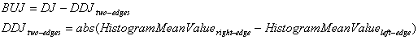
Figure 9 shows a block diagram of the BUJ measurement algorithm flow as implemented on the V93000.
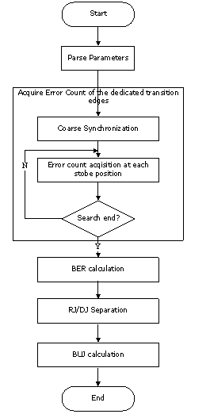
Figure 9 BUJ measurement flow on V93000
5. Correlation Results
To demonstrate the algorithms presented in the previous sections, a correlation setup was developed with the Verigy PinScale HX used as the digital pin electronics card and an Agilent Technologies DCA-J used as the bench instrument for the measurement correlation.
5.1 DDJ Correlation
Figure 10 shows the DDJ measurement setup using the Agilent DCA-J and the PinScale HX receiver as the measurement instruments. DDJ is injected in the form of Inter-symbol Interference (ISI) [1] using a lossy PCB signal trace with a length of 15 inches (35.5 cm) in a FR4 type dielectric. Figuere 11 shows a picture of the setup. A second PinScale HX channel provides the trigger signal for the oscilloscope (DCA-J).
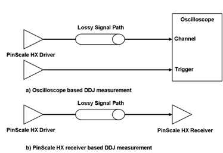
Figure 10 Block diagram of the DDJ measurement correlation setup
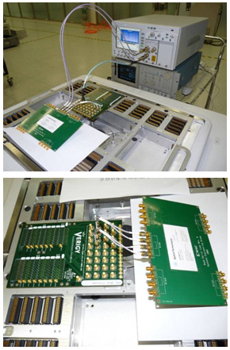
Figure 11 DDJ/BUJ measurement setup with Agilent DCA-J (up) or the PinScale HX receiver (down)
For the correlation measurement a PinScale HX driver was programmed with a PCI Express compliant pattern at a data rate of 5 Gbps.
Figure 12 shows the DDJ measurement result with the DCA-J using the jitter decomposition software option as well as the same measurement performed with PinScale HX using the algorithm previously described. The results show a good correlation between both approaches for this setup.
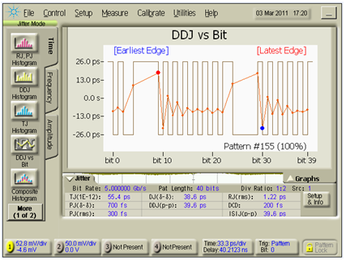
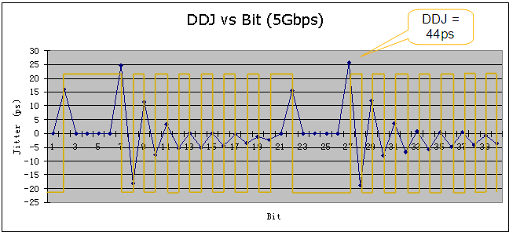
Figure 12 DDJ measurement result with DCA-J (top) and with PinScale HX (bottom)
To demonstrate that only data dependent jitter is measured (i.e. correlated with the pattern), 100 ps of periodic sinusoidal jitter was injected using the PinScale HX internal sinusoidal jitter source. The resulting measured DDJ is shown in Figure 13, where it is possible to observe that there has been little impact on the measured DDJ values as expected.
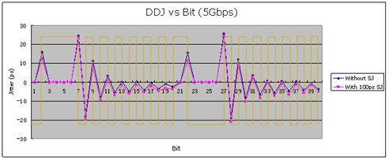
Figure 13 Measured DDJ with and without 100 ps injected sinusoidal jitter (uncorrelated)
5.2 BUJ Correlation
Two different measurement setups were used to measure the BUJ. The first setup is intended to measure BUJ in the form of periodic sinusoidal jitter and the second setup measures BUJ in the form of crosstalk jitter from another data signal.
5.2.1 BUJ Correlation with an Uncorrelated Sinusoidal Jitter Source
In the setup shown in Figure 14, a PinScale HX driver is running at 2.5 Gbps with a PCIE compliance pattern. The internal modulation source in the PinScale HX card is programmed with 100 ps peak-to-peak periodic sinusoidal jitter at a frequency of 40 MHz. Note that the PinScale HX internal modulation source is asynchronous with regards to the data pattern. Bit 17 of the PCIE compliance pattern was used as the measurement bit for the BUJ measurement as discussed previously.
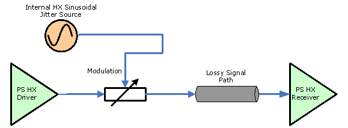
Figure 14 BUJ measurement setup with injected uncorrelated sinusoidal jitter and a lossy signal path
Figure 15shows the measured results with the jitter decomposition software of the Agilent Technologies DCA-J for the cases both with, and without, sinusoidal injected periodic jitter. The results show that the DCA-J in this case is able to correctly identify the BUJ in the form of periodic sinusoidal jitter with a measured value of 90.2 ps, although it reports it simply as periodic jitter (no BUJ value is reported by the DCA-J jitter separation software).
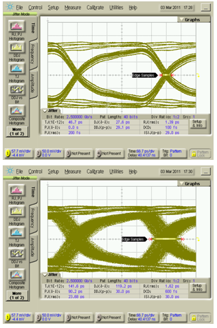
Figure 15 Agilent Technologies DCA-J jitter decomposition software results without sinusoidal injected jitter (up) and with 100 ps of sinusoidal injected jitter (down)
For the Dual Dirac RJ/DJ separation method, 1E7 bits were compared and the fitting range was from 1e-3 to 1e-7 with a transition density value of 0.5. The fitting range is not ideal, but is a compromise between the test time taken, and measurement accuracy resulting from a larger fitting range. Table 1 shows the measured values for different measurement configurations.
# |
Measurement Setup |
Measured DJ Value |
|---|---|---|
1 |
DJ measured with all bits compared without sinusoidal jitter or lossy signal path (ISI) |
4.2 ps |
2 |
BUJ without sinusoidal jitter or the lossy signal path |
0 ps (-0.31 ps) |
3 |
BUJ with lossy signal path ISI board |
-2.57 ps |
4 |
BUJ with 100 ps programmed peak-to-peak injected sinusoidal periodic jitter |
41.2 ps |
5 |
BUJ with ISI board and 100 ps programmed peak-to-peak injected sinusoidal periodic jitter |
40 ps |
Measurement #1 shows the measured DJ from PinScale HX with the PCIe compliance pattern. Measurement #2 shows the measured BUJ value for the PCIe compliance pattern. The expectation is that it is 0 since the ISI jitter should no longer be part of the measurement (it was the dominant factor in the DJ of measurement #1). For measurement #3, a lossy signal path was added to the setup (the same board that was used in section 5.1). The measured value was -2.57 ps, and the expected value was that it should be 0 ps. The reason for the negative value is shown in Figure 16. The issue is that in order to perform the RJ/DJ separation using the Dual Dirac technique described in [1,2], we need to utilize two transitions for measuring the BER bathtub curve. We do use two edges for this measurement, and given the additional fact that there is some DDJ between both edges (although edge 17 was chosen since it is in a region with low DDJ value as shown in Figure 12), it is just enough DDJ to move the edges from their ideal position and result in the measured value being negative. It is also possible to have a positive result depending on the DDJ and edge chosen. In a final solution this DDJ value between the two edges needs to be calibrated out of the measurement, but in this paper we prefer to show it so that the reader better understands the entire algorithm and associated issues.
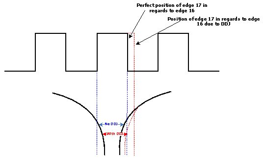
Figure 16 Effect of the DDJ between edge 16 and 17 on a BUJ measurement in the presence of DDJ
Measurement #4 shows the measured BUJ in the presence of sinusoidal jitter. As expected the BUJ value increases although the measured value is significantly lower than the expected value of around 100 ps. The difference between the programmed and measured value is due to different factors such as pattern length, calibration, RJ/DJ algorithm parameters, etc. Finally, in measurement #5 the ISI board is added in addition to the sinusoidal jitter, and it can be observed that the measured BUJ value changes very little.
5.2.2 BUJ Correlation with an Uncorrelated Crosstalk Jitter Source
Figure 17 shows the block diagram of the BUJ correlation measurement setup for BUJ being generated by crosstalk from an adjacent data channel [1]. BUJ is injected by using the external modulation input of the PinScale HX card using a PinScale 3600 channel as the BUJ source. The PinScale 3600 channel is programmed with a PRBS23 pattern at a data rate of 1.25 Gbps. A 100 MHz low pass filter is added at its output to limit the bandwidth of the injected BUJ. The PinScale HX driver is running a PCI-Express compliance pattern at 5 Gbps. Figure 18 shows the BUJ frequency spectrum measured after the low pass filter. Note that in this case the spectrum does not appear completely random as in the PRBS31 case showed in Figure 5, but still looks very close to the spectrum of bounded random jitter.
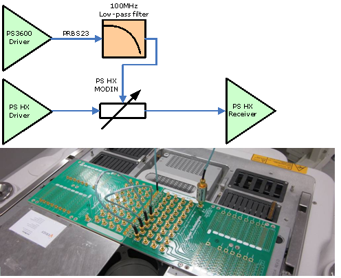
Figuere 17 Block diagram of the PinScale HX based BUJ measurement setup (top) and picture of the measurement setup (bottom)
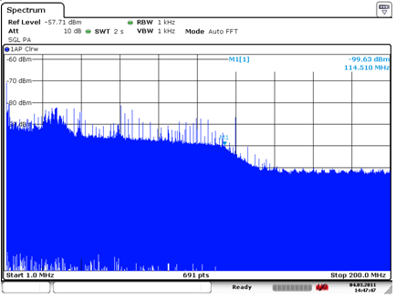
Figure 18 BUJ spectrum from a PS3600 driver running a PRBS23 pattern at 1.25 Gbps with a programmed voltage amplitude of 0.4V (+/- 0.2V)
Figure 19 shows the measurement results obtained with the jitter separation software of the Agilent Technologies DCA-J. In this case the oscilloscope jitter decomposition algorithm has clearly mistaken the injected BUJ for random jitter since the random jitter being reported has increased from 1.34 ps (no injected BUJ) to 20.3 ps (with injected BUJ).
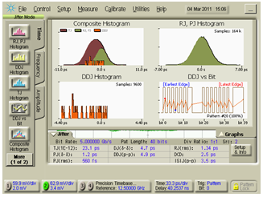
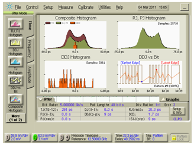
Figure 19 Jitter decomposition results with a DCA-J without BUJ jitter injection (up) and with BUJ jitter injection (down)
Using the V93000 PinScale HX digital pin electronics card with the algorithm described in Section 3 (1E8 compared bits and a fitting range from 1E-5 to 1E-8) we observe the same problem where the BUJ is interpreted as random jitter as shown in Figure 20. The reason for this is the Dual Dirac jitter separation method. The Dual Dirac method assumes that the deterministic jitter is of a "ping-pong" nature, while clearly BUJ from a data crosstalk source is of a very different type. This is the reason why the algorithm mistakes BUJ for random jitter. To address this problem a different jitter separation algorithm would have to be developed using a different deterministic jitter model which is not a trivial task. In the meantime the test engineer needs to be aware of the challenges of measuring BUJ where the root cause is data crosstalk.
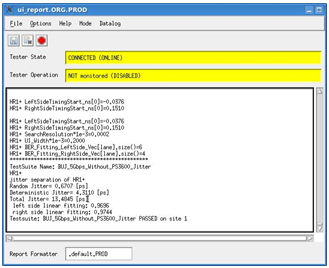
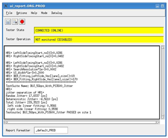
Figure 20 Jitter decomposition results measured with the V93000 PinScale HX without BUJ jitter injection (up) and with BUJ jitter injection (down)
It is important to note that in the Dual Dirac jitter separation method, the fitting range has a significant impact on the final RJ/DJ separation results. For the measurement shown in Figure 20 the fitting range will have a major impact on the resulting measured values. Table 2 shows the measured results for different fitting range values. As expected, much more accurate results are reported for fitting ranges using lower BER values (note that in this case the algorithm mistakes BUJ for RJ so the expectation is a lower DJ and a high RJ value). This is at the expense of longer test times due to the need to use longer patterns and collect more data. The negative DJ values that are computed can sometimes occur in situations where the expected DJ value is very low which makes the algorithm very sensitive to measurement errors such as edge placement linearity. Some instrument manufacturers will simply default to reporting a value of zero when the computation of DJ results in a negative value.
|
5Gbps, Samples 1E8 |
||
|---|---|---|---|
Fitting Range |
RJ (ps) |
DJ (ps) |
TJ (ps) BER=10E-12 |
1e-2~1e-8 |
13.9 |
41.63 |
231.8 |
1e-3~1e-8 |
13.6 |
38.6 |
224.6 |
1e-4~1e-8 |
16.1 |
13.3 |
244.6 |
1e-5~1e-8 |
17.8 |
- 4.6 |
239.4 |
6. Conclusions
The results presented in this paper show that it is possible to further characterize the deterministic jitter in a measured signal by separating it into data dependent jitter and bounded uncorrelated jitter using the V93000 digital pin electronics. The method utilized is not new and has been used by some bench instrument manufacturers for example, Tektronix BertScope), and while it was not addressed in this paper, additional techniques do exist which allow further decomposition of the measured jitter into the other components such as ISI, DCD and PJ.
The advantage of implementing these techniques with the V93000 is that it allows the ATE to perform additional characterization measurements traditionally performed on the bench. This will allow for the easy testing of a large number of devices by taking advantage of the inherent benefits of the ATE which include having a consistent and repeatable DUT interface, integration to handlers and production interfaces, and finally the ability to make multiple measurements at once through the use of parallel testing and multi-site capabilities.
7. References
[1] Jose Moreira and Hubert Werkmann, Testing High-Speed Digital Interfaces with Automated Test Equipment, Artech House, 2010.
[2] Gert Haensel, Korbinian Stieglbauer, Guido Schulze and Jose Moreira "Implementation of an Economic Jitter Compliance Test for a Multi-Gigabit Device on ATE", IEEE International Test Conference, 2004.
[3] Mike Peng Li, Jitter, Noise, and Signal Integrity at High-Speed, Prentice Hall 2007.
[4] Tektronix "BERTScope Bit Error Testers Jitter Map "Under the Hood", Application Note, 2010.
[5] Youngquan Fan and Zeljko Zilic, Accelerating Test, Validation and Debug of High Speed Serial Interfaces, Springer 2011.
[6] LeCroy "Jitter and Jitter Break Down Analysis", Presentation, 2010.